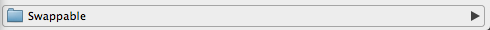

We recommend you make a backup of your bookmarks by exporting your bookmarks to a file. Steps to do this can be found here
Swappable uses a special folder called 'Swappable' in your 'Other bookmarks' folder to store your Swappable bookmark bar folders.
This folder is automatically created for you upon installation of Swappable and your current bookmark bar bookmarks have been placed in a new Swappable folder called 'Bookmarks Bar Backup'.
To start using Swappable, you should create one or more new folders within the Swappable folder in your 'Other bookmarks' folder. After creating these folders, you can Swap to them by clicking the Swappable icon and selecting your new folder. Now you can start adding bookmarks to your bookmark bar and they will be saved to your new Swappable bookmakrs bar.
To Swap between bookmark bars, simply click the Swappable extension icon and choose the bookmark bar you want to use. Happy Swapping!
Deleting the first bookmark from a Swappable bookmark bar does not work. If you want to delete this bookmark, you will need to delete it from within its folder in the 'Swappable' folder of 'Other bookmarks'.
Updating the title or URL of the bookmark in a Swappable bookmark bar does not work. These changes should be made from within the 'Swappable' folder of 'Other bookmarks'.